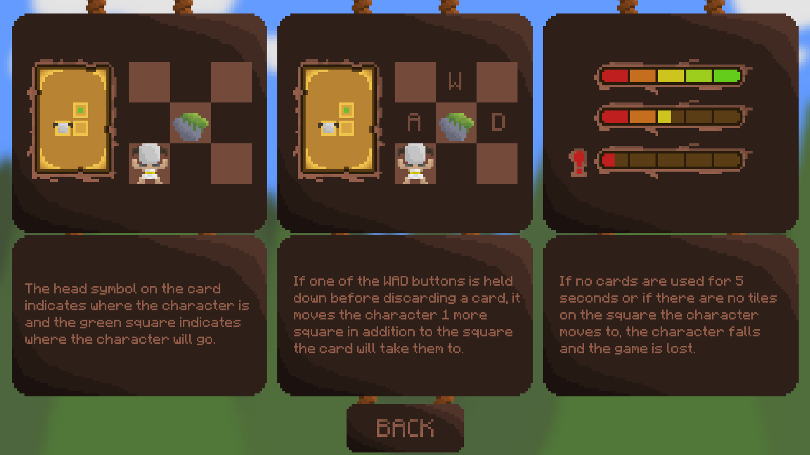
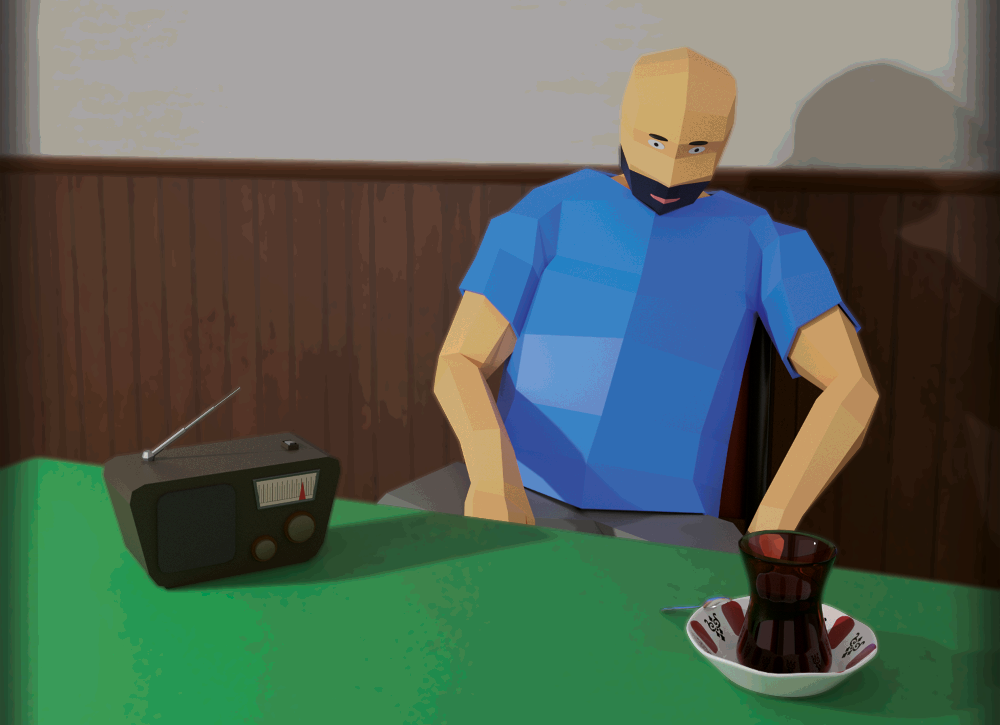
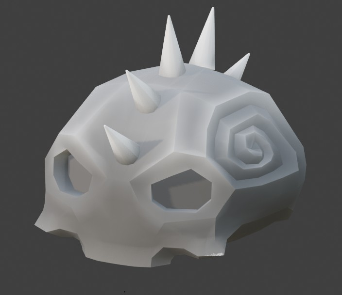

My Games

Revenge Of The Titans
An ancient Greek mythology-themed, challenging climbing game that combines arcade and card mechanics. As Krios, climb the mountain to rescue Sisyphus. Features a unique movement mechanic.

Bir Demlik Umut
A story-driven management simulation game that explores the theme of “Decay.” Play as retired teacher Ömer as he struggles to earn money for his sick wife's surgery. Features 6 different endings.

Test Subject (In Development)
A strategy game combining Roguelike and Turn-Based Card systems. Take on the role of an AI and experience the conflict between developer commands and hidden codes.